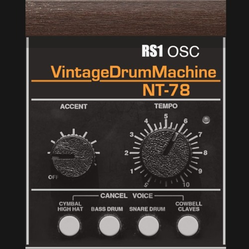
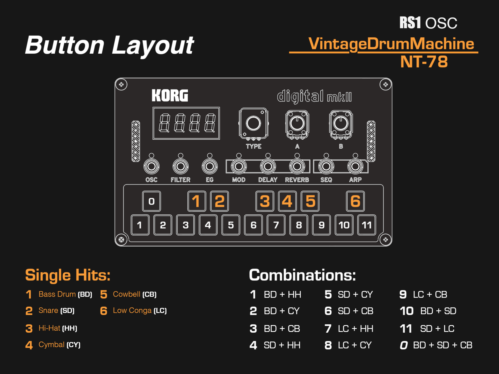

This reproduction of a Vintage Drum Machine is created by GladiTek and Regroove using the RS1 Synthesizer engine. What started as a discusion and Proof of Concept that the Korg NTS1 mkII could do drumkits, is now a serious rhythm machine! The recording below is played using Korg NTS1 mkII and external MIDI sequencing. However, we have mapped the keyboard and preset so that it is possible to also use the device's Step Sequencer directly.

